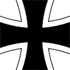

| Data utworzenia: | |
| Szef: | |
| Luftwaffe - oficjalna nazwa sił powietrznych III Rzeszy i Republiki Federalnej Niemiec. Jej zadaniem jest prowadzenie walki powietrznej, bombardowanie sił nieprzyjaciela oraz prowadzenie desantu powietrznego i rozpoznania lotniczego. W czasie II wojny światowej w skład Luftwaffe wchodziły także: lądowa obrona przeciwlotnicza, tzw. dywizje polowe (Luftfelddivisionen), czyli oddziały lądowe, jak również naziemne służby wsparcia (łączność, obsługa techniczna, służba zdrowia, kwatermistrzostwo). | Logotyp  Znak rozpoznawczy |
| Spis treści |